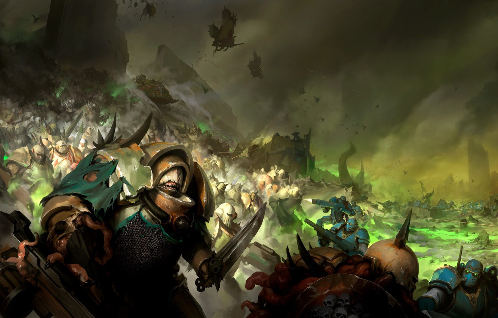
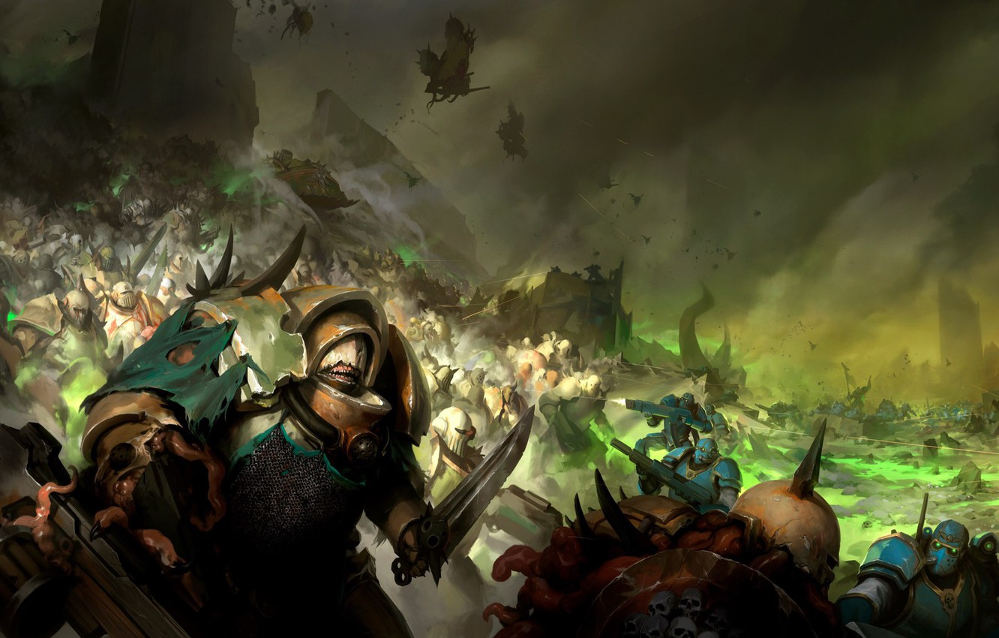

List mé Deathguard armády

Co nebo kdo je Deathguard
Je to armáda ze světa WH40K a jedná se o Chaos mariňáky (Vesmírní vojáci).
Jejich vůdcem a Primarchou je Mortarion.
Více se můžete dozvědět na wiki pro Warhammer.

Je to armáda ze světa WH40K a jedná se o Chaos mariňáky (Vesmírní vojáci).
Jejich vůdcem a Primarchou je Mortarion.
Více se můžete dozvědět na wiki pro Warhammer.